Handmade Objects
Pair of French Sèvres-Style Bleu Céleste Porcelain Lidded Urns with Hand-Painted Genre Scenes
· 20th century
Price Upon Request

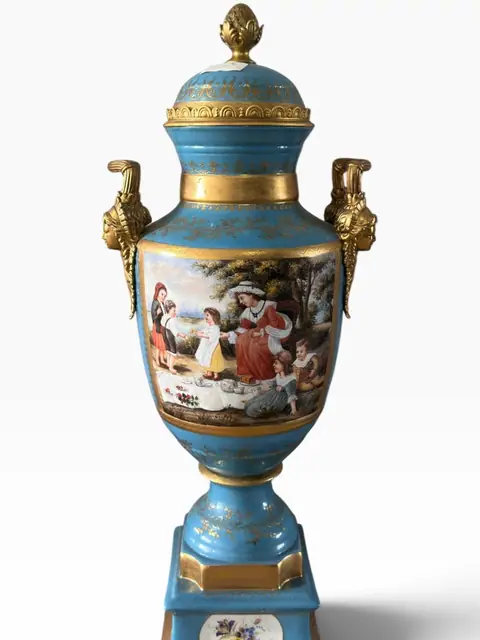
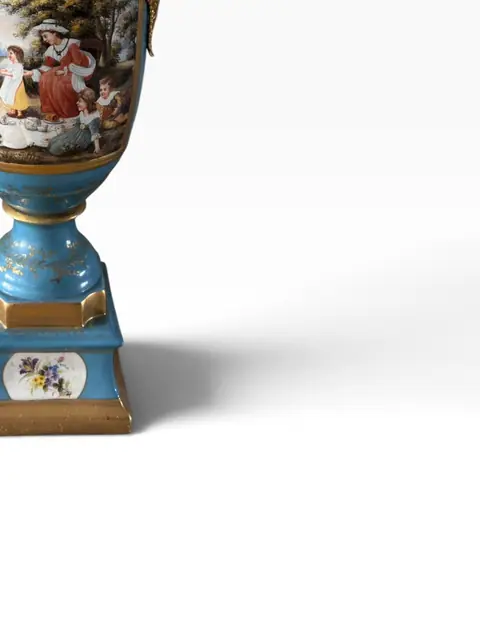
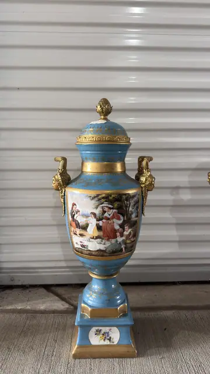
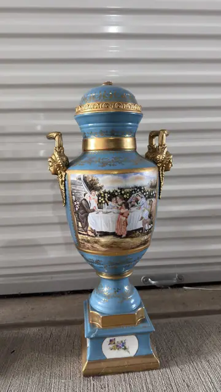
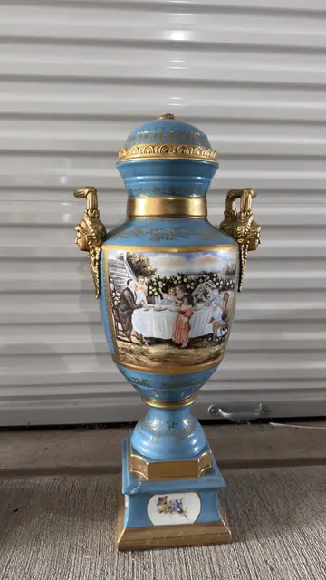
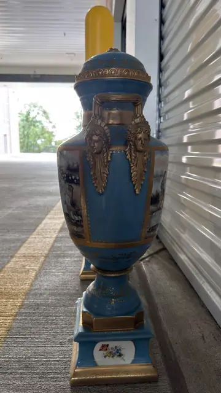
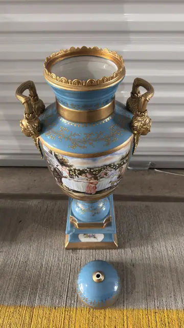
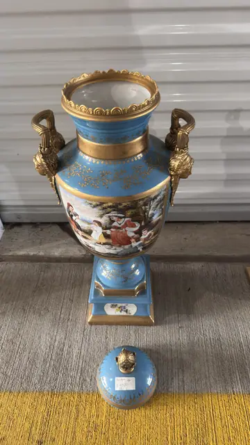
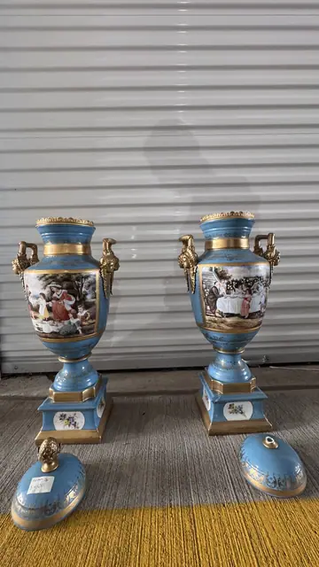
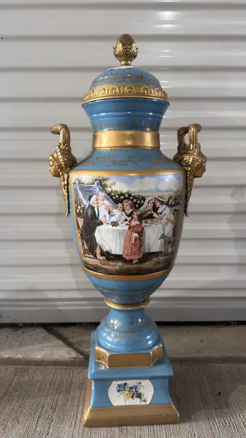
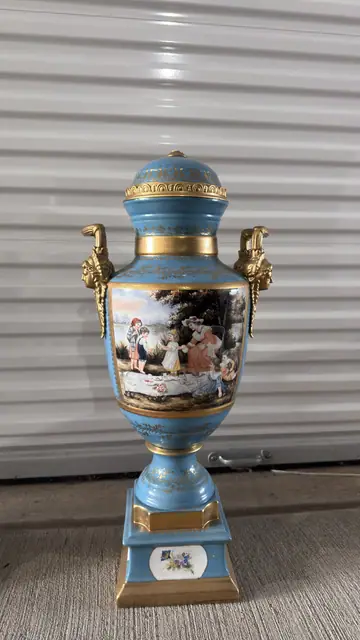
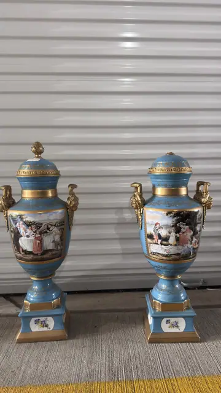
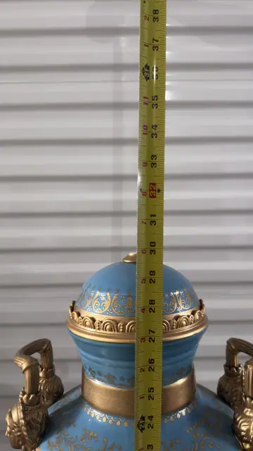
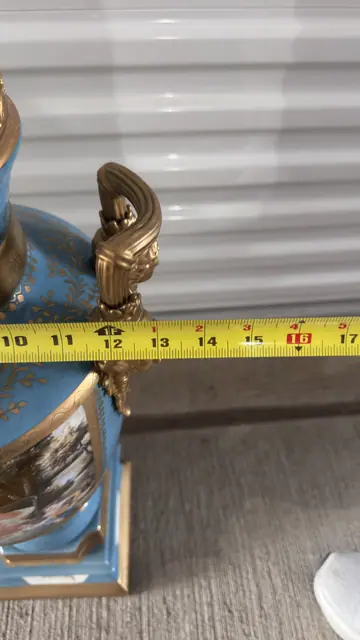
About the Item
A pair of French lidded urns in the Sèvres taste, each on a turquoise bleu-céleste ground with rich gilt ornament. One face of each urn is reserved with a hand-painted genre scene — a family picnic and an interior dining scene — while the square plinth bases carry floral medallions. Surmounted by domed covers with pinecone finials and flanked by figural mask handles in the Louis XVI taste. Unmarked (no factory mark visible in any photo). Type matches documented 'Sevres-style bleu celeste porcelain lidded urn' lots (cf. John Moran, early 20th c., pinecone finial, mask handles, square foot). Scenes: picnic genre scene one side, interior dining scene reverse. Gilt figural handles with classical masks. Note: Photo 08 and photo 11 show TWO matching urns side by side — verify before listing whether the listing covers one urn or the pair. Cover image shows one.
Details
- Creation Year:
- 20th century
- Medium:
- Porcelain
- Period:
- 20Th
- Condition:
- Offered in the condition shown in the photographs.
- Reference Number:
- VO-371